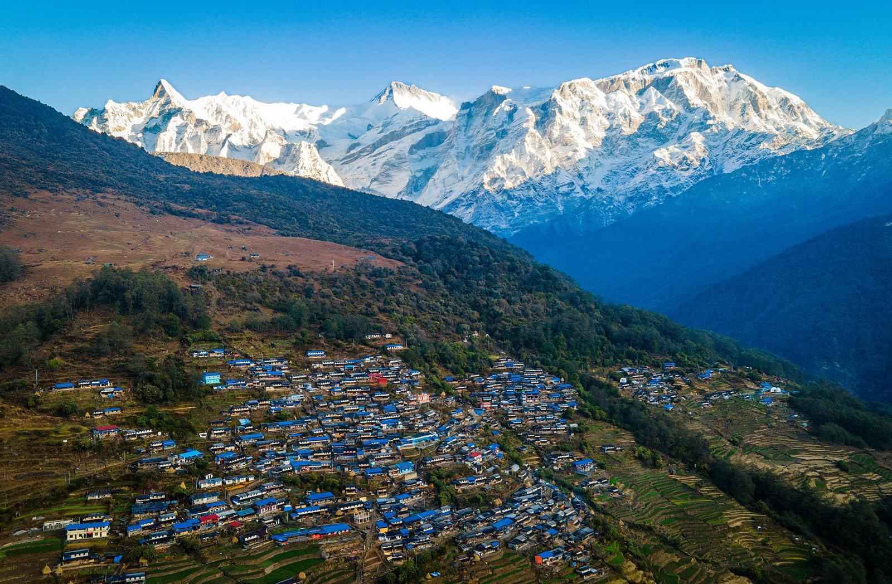
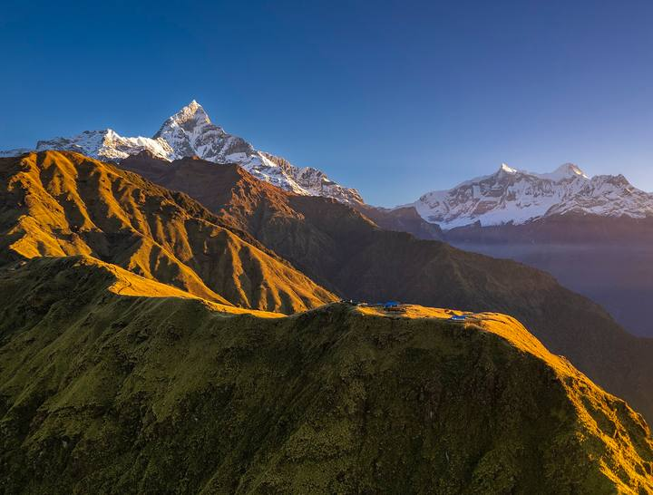
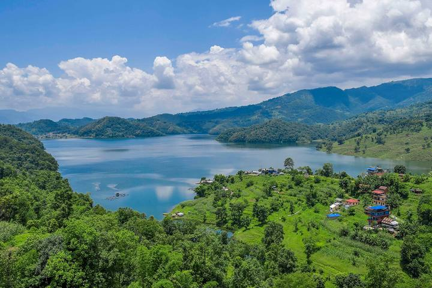
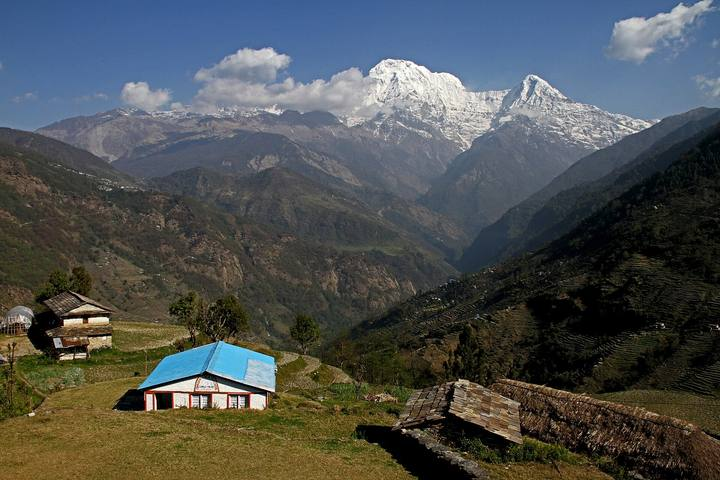

Sikles
Five days north-east of Pokhara: a rough ride to the Gurung village of Sikles, a day among its stone houses, then two forest days over Tara Hill Top at about 3,000 m to Ghalekharka.


- Duration
- 4–7 days
- Distance
- 22 kmapproximate
- Highest point
- 3,000 mTara Hill Top · 9,843 ft
- Highest night
- 3,000 mTara Hill Top
- Difficulty
- ModerateHomestays · Teahouse lodges · Camping
- Best months
- Mar–Apr, Oct–Nov
Is this trek right for me?
The walking
5 days in all. Most walking days are 4 to 6 hours on foot, and the longest is about 6 hours. Five to seven hour days with real climbs, usually below 4,500 m.
The height
The highest night is at 3,000 m, and the plan gains height quickly on the way. Many people feel it. The day-by-day plan marks where: take that day slowly, or split it.
Where you sleep
In lodges on most nights, and in tents on a few: a simple twin room, a shared bathroom and hot meals in a warm dining room.
The help you need
The rules require a licensed guide on this route. A porter to carry your bag is your choice.
Overview
Sikles stands at 1,980 m on a spur above the Madi Khola, north-east of Pokhara, with Lamjung Himal and Annapurna II at the head of its valley. It is one of the largest Gurung villages in Nepal: several hundred stone houses packed along the ridge, terraced fields below, and families who take guests into their own homes. A rough road now reaches it, so the old two-day walk up the valley has become a jeep ride of three to four hours, and the village itself is within reach of almost anyone.
The trekking is on the way home. Behind the village a forested ridge rises to a clearing called Tara Hill Top, at about 3,000 m, and a trail that the conservation area project promoted as an eco-trek crosses it to Ghalekharka, on the Pokhara side. That is two days through oak and rhododendron forest with no villages: a climb of 1,000 m, then a descent of 1,300 m. From the top, at dawn, you look at Annapurna II, Lamjung Himal and Machhapuchhre with very few people about.
Be honest with yourself about that second half. Shelter on the ridge is one very basic teahouse that is not always open, and many groups carry tents and food. The path is unsigned, slippery when wet and full of leeches in the rains. Printed heights, times and even stopping places differ from one itinerary to the next, so treat the stages below as a guide and not a timetable. If you want an easy trip, stay two nights in Sikles, walk up towards the ridge and back, and ride home. That is a good trek in itself.
Highlights
- Sikles: several hundred stone houses on a spur above the Madi Khola
- Lamjung Himal and Annapurna II at the head of the valley
- Nights in Gurung family homestays
- Dawn from the forest clearing at Tara Hill Top
- Rhododendron in flower on the ridge in March and April
- Two days of forest with hardly anyone else on the trail
Moderate: The village is easy to reach, but the way back is two long forest days, 1,000 m up and 1,300 m down, with no villages and only the plainest shelter.
Altitude profile
Height at the end of each day, with the high points in between. Dots are the places you sleep.
1 night gains height faster than the usual guideline. That is common on standard itineraries, but it is where problems start. Check how you feel before each of these climbs.
- Day 3, Tara Hill Top: A climb of 1,020 m in one day, to sleep at 3,000 m. Go slowly, drink plenty, and say so if you get a headache.
Try adding a night in the acclimatization checker · Check your symptoms
Day by day
About 10–15 h of walking in total. Times are for a steady pace with short breaks; add more for photos and tea.
-
Day1
Drive from Pokhara to Sikles
A rough road up the Madi Khola valley, dusty in the dry months and muddy after rain, with a steep last climb to the village. Jeeps take three to four hours and the local bus longer. Find your homestay, then walk up through the stone lanes before dark. At 1,980 m the evenings are cool even in spring.
37 places to stay in Sikles, such as Brijal Homestay, Tai Maya Gurung and Centre point maya gurung home stay. See them
Travel day- Sleep at
- 1,980 m
- Change
- +1,158 m
- Jeep
- 3–4 h
-
Day2
A day in Sikles
Based at Sikles
Spend the day on foot in the village: the stone lanes and courtyards, the conservation area office and the fields above the top houses, which look up the valley to Lamjung Himal and Annapurna II. Ask your hosts whether the teahouse on Tara Hill Top is open, and arrange a local guide or porter for the crossing.
37 places to stay in Sikles, such as Brijal Homestay, Tai Maya Gurung and Centre point maya gurung home stay. See them
Rest day- Sleep at
- 1,980 m
- Change
- 0 m
- Walking
- 2–3 h
-
Day3
Sikles to Tara Hill Top
A climb of about 1,000 m on a narrow forest path through oak and rhododendron, with no village or tea shop on the way and no water you can count on. Carry lunch and two litres each. The top is a clearing on the ridge with one very basic teahouse; if it is shut, you camp. Be up at first light for the view.
Watch this gainA climb of 1,020 m in one day, to sleep at 3,000 m. Go slowly, drink plenty, and say so if you get a headache.
- Sleep at
- 3,000 m
- Change
- +1,020 m
- Walking
- 4–6 h
-
Day4
Tara Hill Top to Ghalekharka
Down the far side of the ridge: about 1,300 m of descent through forest and the cattle pasture of Nyauli Kharka, steep and slippery in places and hard on the knees. Side trails lead to herders' camps and nothing is signed, which is the main reason to take a local guide. Ghalekharka has homestay rooms and a campsite.
1 place to stay in Ghalekharka, such as Samjhana home stay. See them
- Sleep at
- 1,680 m
- Change
- −1,320 m
- Walking
- 4–6 h
-
Day5
Walk out to the road, drive to Pokhara
Walk down to the nearest roadhead, two to three hours on village paths, and meet a jeep booked the day before for the ride of an hour or two to Pokhara. The roadhead moves as the track is extended, so let your guide or host fix the meeting point. The old trail carries on down to the Bhurjung Khola instead.
Travel day- Sleep at
- 822 m
- Change
- −858 m
- Jeep
- 3–5 h
Ways to change it
Village stay and Tara Hill Top, without the crossing
Climb to the top from Sikles with a light pack, sleep there, walk back down to the village next morning and return to Pokhara by road. It avoids the long descent to Ghalekharka and the uncertain walk out, and it is the version we would suggest to older walkers.
The loop the other way
Many agencies begin on the Pokhara side: a short drive, a day's walk up to Ghalekharka, then over Tara Hill Top to reach Sikles on the third afternoon, and a jeep home. It makes the village the goal of the trek, but it starts with the 1,300 m climb.
A forest camp instead of the top
Older itineraries break the crossing at a forest camp near Nyauli Kharka, lower down on the Ghalekharka side, in place of a night on the top. There is no lodge there, so it is a night in a tent.
The old walk in
Before the road was built the trek began near Pokhara and took two days up the Madi Khola, by Kalikasthan and Lamakhet. Most of that trail is now the jeep track, and few people walk it.
Kapuche Lake
From Sikles a rougher trail runs north up the Madi Khola to the herders' huts at Hugu Goth and a glacial lake at about 2,500 m, two days there and back with very simple shelter. It is narrower and wilder than anything on the village trek. Ask in Sikles about the state of the path.
Route map
The map loads when you scroll here. It needs a connection the first time; tiles you have viewed stay available offline.
The dashed line simply joins the stops in order; follow the trail on the map and on the ground, not the line. Marker positions come from OpenStreetMap where we could match a place, and from our own estimates elsewhere.
When to go
- January: difficult
- February: good
- March: best time
- April: best time
- May: good
- June: difficult
- July: difficult
- August: difficult
- September: good
- October: best time
- November: best time
- December: good
October and November give the clearest views, and in March and April the forest below Tara Hill Top is in flower with rhododendron. The village can be visited all winter, but from late December to early February snow can lie on the ridge, and the crossing is then best left out. In the monsoon the forest path is mud and leeches, and landslides close the road for days at a time.
Permits and guide rules
Guide required. Since April 2023 the Nepal Tourism Board has required foreign trekkers in conservation areas to walk with a licensed guide, though checks on the trail are inconsistent. Here you need one in any case: the path over Tara Hill Top is unsigned, crosses forest with no settlements and may mean carrying food and a tent. Add someone from Sikles who has walked it this season.
ACAP
Conservation areaAnnapurna Conservation Area Permit · National Trust for Nature Conservation
| Foreign nationals | NPR 3,000 | person, single entry |
| SAARC nationals | NPR 1,000 | person, single entry |
Where: Online at NTNC's e-permit site, or in person at the Tourist Service Centre in Bhrikutimandap, Kathmandu, and the Nepal Tourism Board office in Pokhara. A permit issued at a trail checkpost costs double.
The fee includes tax and children under 10 do not need a permit. Paying online by card adds a 2.9% gateway charge. Covers every trek in the Annapurna range and Lower Mustang; Upper Mustang and Nar Phu need a restricted-area permit as well.
TIMS card
RegistrationTrekkers' Information Management System card · Nepal Tourism Board and the Trekking Agencies' Association of Nepal
| Foreign nationals | NPR 2,000 | person, per trek |
| SAARC nationals | NPR 1,000 | person, per trek |
Where: Only through a registered trekking agency, which applies in the Nepal Tourism Board's online system with your route and your guide's details. Individual trekkers can no longer buy one over the counter.
Since the revised rules of 31 March 2023 the card is tied to trekking with a licensed guide on the tourism board's listed routes. It is not used in Khumbu, where the municipality's Trek Card took its place in 2017. For restricted areas the published rules pull both ways: TAAN's pages say TIMS applies in every trekking area, restricted ones included, yet also list visitors holding Department of Immigration permits among those who do not need one, and agencies disagree. Your agency, which is compulsory there anyway, will know what the checkposts on your route ask for. Reports from 2025–26 describe patchy checks of the card, especially in Annapurna.
Agency required
Fees and rules change, sometimes mid-season. Treat these as a planning guide and confirm with the Nepal Tourism Board, the Department of Immigration or a registered agency before you travel. Last reviewed 2026-11. All permits and fees
Getting there
Sikles is at the end of a rough road up the Madi Khola valley, three to four hours from Pokhara by jeep and longer by the local bus. The crossing comes out at Ghalekharka, two to three hours' walk above the nearest road, from where a jeep takes an hour or two to reach Pokhara. If you decide against the crossing, you simply ride back from Sikles.
-
Jeep: Pokhara to Sikles · 3–4 hr
Shared jeeps and a local bus leave Pokhara in the morning; ask your hotel or agency for the current stand and departure time. A hired jeep can stop where you like on the way.
-
Jeep: Sikles to Pokhara · 3–4 hr
The way back for anyone who decides against the crossing. Vehicles leave early, so book a seat the evening before.
-
Jeep: Ghalekharka to Pokhara · 3–5 hr
Two to three hours on foot down to the roadhead, then one to two hours by jeep. There is no regular service, so arrange the jeep before you leave Sikles.
- Gateway
- Pokhara
- Walk starts
- Sikles · 1,980 m
- Walk ends
- Ghalekharka · 1,680 m
Hazards on this route
A lonely, unsigned forest crossing
Between Sikles and Ghalekharka there are no villages, no signposts and few people. Paths made by herders and woodcutters branch off the main trail, and in cloud the forest looks the same in every direction. Do not attempt the crossing alone, or without someone who has walked it recently.
Little or no shelter on the ridge
The teahouse on Tara Hill Top is small and bare, and may be closed outside the main seasons or when its keeper is away. Nights at 3,000 m are below freezing from November to March. Carry a warm sleeping bag, and a tent and food as well unless you have confirmed in Sikles that the teahouse is open.
Leeches and slippery ground
From June to September, and after any heavy rain, the forest path is mud, wet roots and leeches. The 1,300 m descent to Ghalekharka is where people fall. Use two poles and allow extra time.
The road in
The Sikles road is cut into steep, loose hillsides. Landslides close it in the monsoon and sometimes after winter rain, and vehicles do not keep to a timetable. Leave a spare day before any onward flight.
A fast gain in sleeping height
Going from 1,980 m to about 3,000 m in a day is enough to give some people a headache and a poor night. Drink plenty and climb slowly. If you feel unwell in the night, go back down to Sikles in the morning, where there is a road.
Practical tips
- Confirm in Sikles, not in Pokhara, whether the Tara Hill Top teahouse is open and stocked. Your homestay host will know.
- Hire a local guide or porter in the village for the two forest days, even if you already have a guide from Pokhara.
- Carry a sleeping bag, a head torch, water treatment and snacks for two days.
- Bring cash from Pokhara. There is no cash machine in the valley.
- Ask before you photograph people, and dress modestly. Sikles is a working village, and you are a guest in someone's house.
- Heights printed for Tara Hill Top run from 2,800 to 3,056 m, and for Ghalekharka from 1,520 to 1,800 m. Treat every figure on the far side of the ridge as approximate.
We know of no cash machines on this route. Carry all the rupees you need from Pokhara. Work out how much.
Plan this trek
Choose your dates and see the whole trip on one page: where you sleep each night, who can help you, what it may cost and the papers you need. Then ask for a price.
More tools for this trek
Who can help you on this trek
The rules require a licensed guide on this route. A porter to carry your bag is your choice.
-
A trekking company that arranges everythingOne price for everything on the trek. Ask two or three companies.
-
A guide, and a porter to carry your bagAbout USD 25 to 40 a day for the guide and USD 18 to 25 for the porter.
-
A guideAbout USD 25 to 40 a day.
-
A porter to carry your bagThe rules require a licensed guide on this route.
-
On your ownThe rules require a licensed guide on this route.
Do you work on the Sikles route as a guide, porter or company? Join TrekkSewa.
Quick answers
How long does the Sikles trek take?
Most people take 4–7 days. The itinerary on this page is 5 days, including 1 day for rest and acclimatization.
How high does the Sikles trek go?
The highest point is Tara Hill Top at 3,000 m (9,843 ft). The highest place you sleep is Tara Hill Top at 3,000 m.
How difficult is it?
We grade it moderate. The village is easy to reach, but the way back is two long forest days, 1,000 m up and 1,300 m down, with no villages and only the plainest shelter.
Which permits do I need?
ACAP, TIMS card. Fees and where to get each one are listed in the permits section above.
Do I need a guide?
Since April 2023 the Nepal Tourism Board has required foreign trekkers in conservation areas to walk with a licensed guide, though checks on the trail are inconsistent. Here you need one in any case: the path over Tara Hill Top is unsigned, crosses forest with no settlements and may mean carrying food and a tent. Add someone from Sikles who has walked it this season.
When is the best time to go?
Mar–Apr, Oct–Nov are best. October and November give the clearest views, and in March and April the forest below Tara Hill Top is in flower with rhododendron. The village can be visited all winter, but from late December to early February snow can lie on the ridge, and the crossing is then best left out. In the monsoon the forest path is mud and leeches, and landslides close the road for days at a time.
Published information on this route is limited. Treat every figure as approximate and confirm with a local operator. Reviewed 2026-11. Trails, lodges and rules change; confirm locally before you rely on any detail. Report a correction.
Similar treks
More in Annapurna
AnnapurnaKhumai Danda
A steep ridge trail to a grassy 3,245 m shoulder facing Machhapuchhre

AnnapurnaRoyal Trek
Four easy days through hill villages east of Pokhara to Begnas Lake

AnnapurnaGhandruk Loop
A short circuit of Gurung villages on both sides of the Modi Khola
 Annapurna
Annapurna
Mardi Himal
A narrow ridge walk to the foot of Machhapuchhre in five days